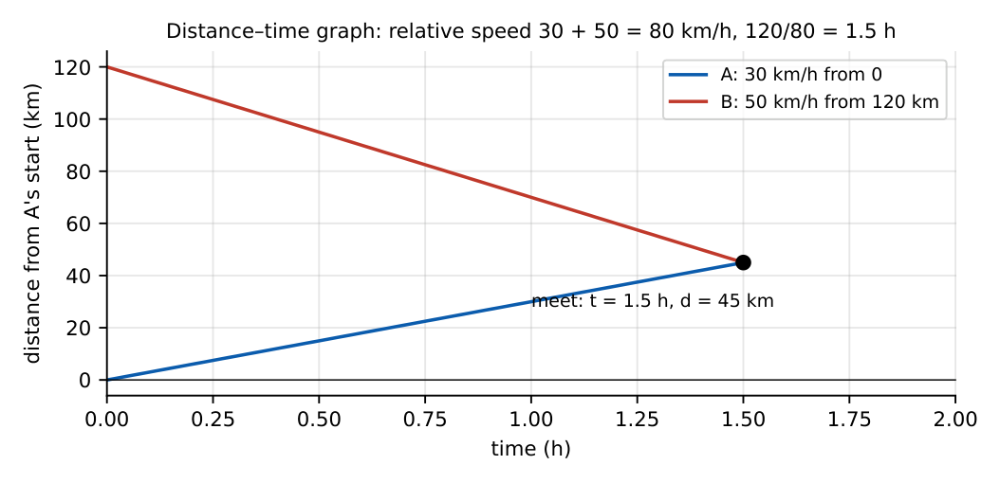

Time and Work; Time, Speed and Distance
Work-rate problems (together, alternately, pipes and leaks), speed–distance–time, relative speed (trains, boats and streams) and average speed. These are formula-driven; setting up the rate equation is the whole skill.
7.1 Time and work
If \(A\) finishes a job in \(a\) days its rate is \(\frac1a\) job/day. Working together: \(\dfrac1{T}=\dfrac1a+\dfrac1b+\cdots\), so for two people \(T=\dfrac{ab}{a+b}\).
Work \(=\) rate \(\times\) time; efficiency \(\propto\frac1{\text{time}}\). If \(A\) is twice as efficient as \(B\), \(A\) takes half the time.
Pipes and cisterns: inlet rate positive, outlet (leak) rate negative: net rate \(=\frac1{t_{in}}-\frac1{t_{out}}\).
Man-days: \(M_1D_1H_1/W_1=M_2D_2H_2/W_2\) (more men \(\to\) fewer days; more work \(\to\) more days). Wages are shared in the ratio of work done.
\(A\) takes \(10\) days and \(B\) takes \(15\): together \(\frac{10\cdot15}{25}=6\) days. \(A,B,C\) take \(20,30,60\) days: \(\frac1{20}+\frac1{30}+\frac1{60}=\frac6{60}\), so \(10\) days. A pipe fills a tank in \(12\) h while a leak empties it in \(20\) h: net \(\frac1{12}-\frac1{20}=\frac1{30}\), \(30\) h.
LCM method. Take the total work \(=\mathrm{LCM}\) of the days (e.g. \(60\) units for \(10,15,20\) days); each person’s daily work is an integer.
7.2 Time, speed and distance
Speed \(=\dfrac{\text{distance}}{\text{time}}\). Conversion: \(x\ \mathrm{km/h}=x\times\frac5{18}\) m/s; \(y\) m/s \(=y\times\frac{18}5\) km/h (\(72\) km/h \(=20\) m/s).
Average speed \(=\frac{\text{total distance}}{\text{total time}}\). Equal distances at \(u,v\): \(\dfrac{2uv}{u+v}\) (harmonic mean; \(40,60\to48\)). Equal times: \(\dfrac{u+v}2\) (arithmetic mean).
Relative speed: opposite directions \(u+v\); same direction \(|u-v|\). Two bodies starting \(D\) apart and meeting: \(t=\frac D{u+v}\).
Trains: to cross a pole or person: length \(L\) at speed \(v\) takes \(L/v\); to cross a platform of length \(P\) takes \((L+P)/v\); two trains cross in \(\frac{L_1+L_2}{\text{relative speed}}\).
Boats: still-water speed \(b\), stream \(s\): downstream \(b+s\), upstream \(b-s\); \(b=\frac{d+u}2\), \(s=\frac{d-u}2\).

Boat \(12\) km/h in still water, stream \(3\) km/h: down \(15\), up \(9\). A \(30\) km trip each way takes \(\frac{30}{15}+\frac{30}9=5\frac13\) h. Two trains of \(100\,\)m and \(150\,\)m moving oppositely at \(54\) and \(36\) km/h: relative speed \(90\) km/h \(=25\) m/s, crossing time \(\frac{250}{25}=10\) s. A \(150\,\)m train passing a pole in \(10\) s has speed \(15\) m/s \(=54\) km/h.
Circular tracks and races. Two runners on a circular track of length \(C\) meet after \(\frac C{u+v}\) (opposite) or \(\frac C{|u-v|}\) (same direction). A beats B by \(d\) in a race of \(D\): when A finishes, B is \(d\) behind.
(i) Average speed is not the arithmetic mean when the distances are equal. (ii) Rates add for work done together, not times. (iii) Convert units first (km/h to m/s). (iv) A train crossing a platform travels \(L+P\), not \(P\). (v) For leaks subtract the rate.
Two workers: \(\frac{ab}{a+b}\). Equal-distance average: \(\frac{2uv}{u+v}\). For trains opposite each other add speeds and add lengths. For upstream/downstream put \(b+s\) and \(b-s\) immediately. Use total work \(=\mathrm{LCM}\) of the days.
7.3 GATE problems
Q1. \(A\) can do a job in \(10\) days and \(B\) in \(15\) days. Together they take (A) 5 days (B) 6 days (C) 8 days (D) 12.5 days.
Q2. \(72\) km/h equals (A) 20 m/s (B) 25 m/s (C) 18 m/s (D) 36 m/s.
Q3. A car goes equal distances at \(40\) and \(60\) km/h. The average speed is (A) 50 (B) 48 (C) 52 (D) 45 km/h.
Q4. A \(150\,\)m train passes a pole in \(10\) s. Its speed is (A) 15 km/h (B) 54 km/h (C) 36 km/h (D) 90 km/h.
Answers: Q1 (B). Q2 (A). Q3 (B). Q4 (B): \(15\) m/s.
Q5. A pipe fills a tank in \(12\) h and a leak empties it in \(20\) h. With both open the tank fills in (A) 8 h (B) 20 h (C) 30 h (D) 32 h.
Q6. A boat has still-water speed \(12\) km/h and the stream flows at \(3\) km/h. The time for a \(30\) km trip downstream and back is (A) 5 h (B) \(5\frac13\) h (C) 6 h (D) \(4\frac12\) h.
Q7. Trains of \(100\,\)m and \(150\,\)m move in opposite directions at \(54\) and \(36\) km/h. They cross in (A) 8 s (B) 10 s (C) 12 s (D) 15 s.
Answers: Q5 (C). Q6 (B). Q7 (B).
Q8. \(A,B,C\) finish a job in \(20,30,60\) days alone. Together they take days.
Q9. A car drives \(2\) h at \(60\) km/h and \(2\) h at \(90\) km/h. Average speed (km/h): .
Q10. Two cars start \(120\) km apart toward each other at \(30\) and \(50\) km/h. They meet after h.
Answers: Q8: 10. Q9: \(\frac{120+180}4=75\). Q10: \(\frac{120}{80}=1.5\).
Q11. Which are true? (A) Average speed for equal distances is the harmonic mean. (B) \(72\) km/h \(=20\) m/s. (C) Average speed for equal times is the arithmetic mean. (D) For opposite directions the relative speed is the difference.
Answers: Q11: (A), (B), (C).
T1. Time if \(A\) takes \(6\) days and \(B\) takes \(12\) days together? T2. \(90\) km/h in m/s? T3. Upstream speed if still-water \(10\) and stream \(2\)?
Answers: T1: 4 days. T2: 25. T3: 8 km/h.
- Rates add: \(\frac1T=\frac1a+\frac1b\); leaks subtract; LCM method for total work.
- Speed \(=d/t\); km/h \(\to\) m/s \(\times\frac5{18}\).
- Equal distances: \(\frac{2uv}{u+v}\); equal times: \(\frac{u+v}2\).
- Relative speed: opposite \(u+v\), same \(|u-v|\); trains add lengths; platform adds \(P\).
- Boats: \(b\pm s\).